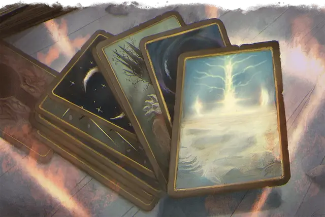

Колода чудес
Deck of Wonder
Чудесный предмет, необычный

Рекомендованная стоимость 101-500 зм
Созданная по образу и подобию колоды многих вещей [deck of many things], эта колода карт из слоновой кости или пергамента предоставляет ряд незначительных преимуществ и наказаний тем, кто из нее извлекает. В большинстве (75 процентах) этих колод всего тринадцать карт, но в остальных - двадцать две.
Перед тем, как тянуть карты, вы должны объявить, сколько собираетесь брать, а затем тяните их по одной (можете использовать модифицированную колоду обычных игральных карт). Карты, взятые сверх названного числа, не будут иметь эффекта. Вы должны тянуть следующую карту не позднее, чем через час после предыдущей. Если вы не вытянули названное число карт, оставшиеся сами вылетают из колоды и вступают в силу одновременно.
Если это не карта Тайна, её магия мгновенно начинает действовать, исчезая из поля зрения и снова появляясь в колоде, что позволяет вытянуть её повторно.
Вы можете использовать измененную колоду обычных игральных карт для имитации колоды, как показано в таблице "Колода чудес".
Колода чудес
| Игральная карта | Карта |
| Туз ♦ | Канцлер* |
| Король ♦ | День |
| Дама ♦ | Ночь |
| Валет ♦ | Рассвет |
| 2 ♦ | Сумерки* |
| Туз ♥ | Судьба* |
| Король ♥ | Корона |
| Дама ♥ | Замок |
| Валет ♥ | Чемпион |
| 2 ♥ | Монета* |
| Туз ♣ | Стервятник* |
| Король ♣ | Хаос |
| Дама ♣ | Порядок |
| Валет ♣ | Начало |
| 2 ♣ | Тайна |
| Туз ♠ | Изоляция |
| Король ♠ | Конец |
| Дама ♠ | Монстр |
| Валет ♠ | Нож |
| 2 ♠ | Справедливость* |
| Джокер (со знаком) | Студент* |
| Джокер (без знака) | Озорство |
* Только в колоде из 22 карт
Начало. Ваш максимум хитов и текущие хиты увеличиваются на 2к10. Увеличение максимума хитов действует в течение 8 часов.
Чемпион. Вы получаете бонус +1 к броскам атаки оружием и урона. Этот бонус действует в течение 8 часов.
Канцлер. В течение 8 часов после вытаскивания этой карты вы можете единожды действием наложить заклинание гадание [augury], не требующего материальных компонентов. В качестве заклинательной характеристики вы используете Интеллект, Мудрость или Харизму (по вашему выбору).
Хаос. Вы получаете сопротивление одному из следующих типов урона (выбирается Мастером): кислота, холод, огонь, электричество или звук. Это сопротивление действует в течение 1к12 дней.
Монета. Пять ювелирных изделий, каждое стоимостью 100 зм, или десять драгоценных камней, каждый стоимостью 50 зм, появляются у ваших ног.
Корона. Вы изучаете заговор дружба [friends]. В качестве заклинательной характеристики вы используете Интеллект, Мудрость или Харизму (по вашему выбору). Если вы уже знаете этот заговор, карта не действует.
Рассвет. Эта карта придаст вам сил. В течение следующих 8 часов вы можете добавлять бонус мастерства к своим броскам инициативы.
День. Вы получаете бонус +1 к спасброскам. Это преимущество действует до тех пор, пока вы не закончите продолжительный отдых.
Судьба. Эта карта защищает вас от преждевременной смерти. Впервые после вытаскивания этой карты, когда ваши хиты должны были опуститься до 0 от получения урона, они вместо этого уменьшаются до 1 хита.
Сумерки. Эта карта сверхъестественным образом высасывает вашу энергию. Вы с помехой совершаете броски инициативы. Этот эффект действует до тех пор, пока вы не закончите продолжительный отдых, но он может быть окончен раньше с помощью заклинания снятие проклятия [remove curse] или подобной магии.
Конец. Эта карта - предзнаменование смерти. Вы получаете 2к10 урона некротической энергией, и ваш максимум хитов уменьшается на количество, равное полученному урону некротической энергией. Этот эффект не может снизить максимуму ваших хитов ниже 10. Уменьшение хитов длится до тех пор, пока цель не окончит продолжительный отдых, но оно может быть окончено раньше с помощью заклинания снятие проклятия [remove curse] или подобной магии.
Изоляция. Вы исчезаете вместе со всем, что вы несёте или носите, оказываясь в ловушке в безвредном подпространстве на 1к4 минуты. Вы больше не берёте карты. После чего вы возвращаетесь в пространство, из которого исчезли, или ближайшее свободное пространство, если то место занято. Когда вы появитесь снова, вы должны преуспеть в спасброске Телосложения Сл 11, иначе станете отравленным в течение 1 часа, так как ваше тело восстанавливается после путешествия в другое измерение.
Справедливость. Вы на мгновение обретаете способность уравновешивать весы судьбы. В течение следующих 8 часов всякий раз, когда вы или существо в пределах 60 футов от вас собираетесь бросить к20 с преимуществом или помехой, вы можете использовать свою реакцию, чтобы аннулировать это преимущество или помеху.
Нож. В ваших руках появляется необычное магическое оружие, которым вы владеете. Мастер определяет оружие.
Замок. Вы получаете возможность наложить заклинание открывание [knock] 1к3 раза. В качестве заклинательной характеристики вы используете Интеллект, Мудрость или Харизму (по вашему выбору).
Озорство. Вы получаете необычный чудесный предмет (по выбору Мастера) или можете вытянуть две дополнительные карты сверх заявленных.
Монстр. Чудовищный облик этой карты проклинает вас. Будучи проклятым таким образом, всякий раз, когда вы совершаете спасбросок, вы должны бросить 1к4 и вычесть выпавшее значение из общего результата. Проклятие действует до тех пор, пока вы не закончите продолжительный отдых, но его можно окончить раньше с помощью заклинания снятие проклятия [remove curse] или подобной магии.
Тайна. Вы с помехой совершаете спасброски Интеллекта в течение 1 часа. Сбросьте эту карту и возьмите другую карту из колоды; вместе эти два вытягивания считаются как одно из заявленных вами вытягиваний.
Ночь. Вы получаете тёмное зрение в радиусе 300 футов. Это темное зрение длится 8 часов.
Порядок. Вы получаете сопротивление одному из следующих типов урона (определяется Мастером): силовое поле, некротическая энергия, яд, психическая энергия или излучение. Это сопротивление длится 1к12 дней.
Студент. Вы получаете владение спасброском Мудрости. Если вы уже владеете этим спасброском, вы вместо этого получаете владение спасброском Интеллекта или Харизмы (по вашему выбору).
Стервятник. Один немагический предмет или часть снаряжения, находящиеся в вашем распоряжении (определяются Мастером), исчезают. Предмет находится поблизости, но скрывается на короткое время, поэтому его можно найти преуспев в проверке Мудрости (Восприятие) Сл 15. Если предмет не будет обнаружен в течение 1 часа, он исчезает навсегда.